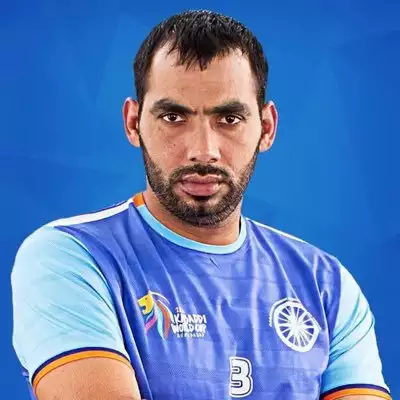

Born: Palra, Gurgaon, Haryana, India
"IF YOU DON'T PRACTICE YOU DON'T DESERVE TO WIN"
Anup Kumar is an Indian former professional Kabaddi player and Kabaddi Coach of PKL Team Puneri Paltan. He was a member of the India national kabaddi team that won Asian gold medals in 2010 and 2014, one South Asian gold medal in 2016 and the 2016 Kabaddi World Cup. He was the captain of the Indian National Kabaddi Team. He spent five years with U Mumba and later moved to Jaipur Pink Panthers. In 2012, the Government of India conferred the Arjuna Award on him for his achievements in the sport.He is employed as a Deputy Commissioner of Police in his native State of Haryana. On 19 December 2018, he announced his retirement from kabbadi.